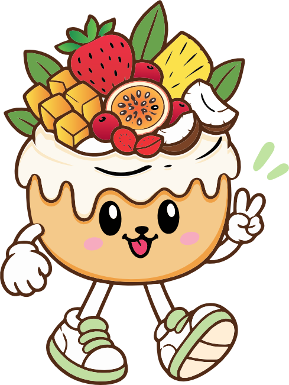
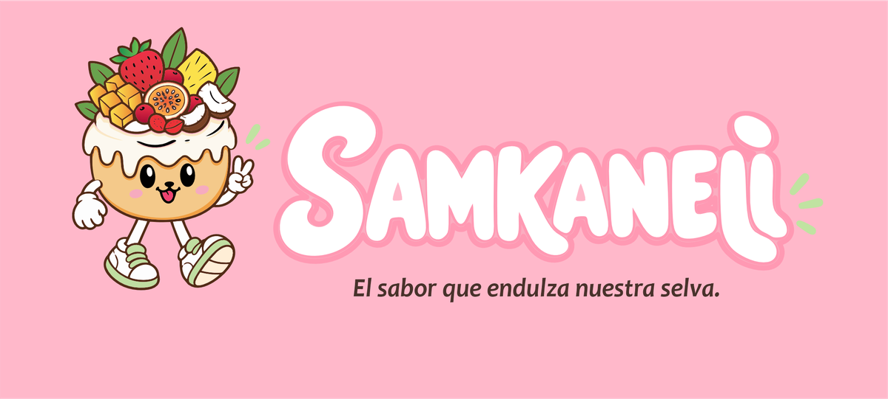
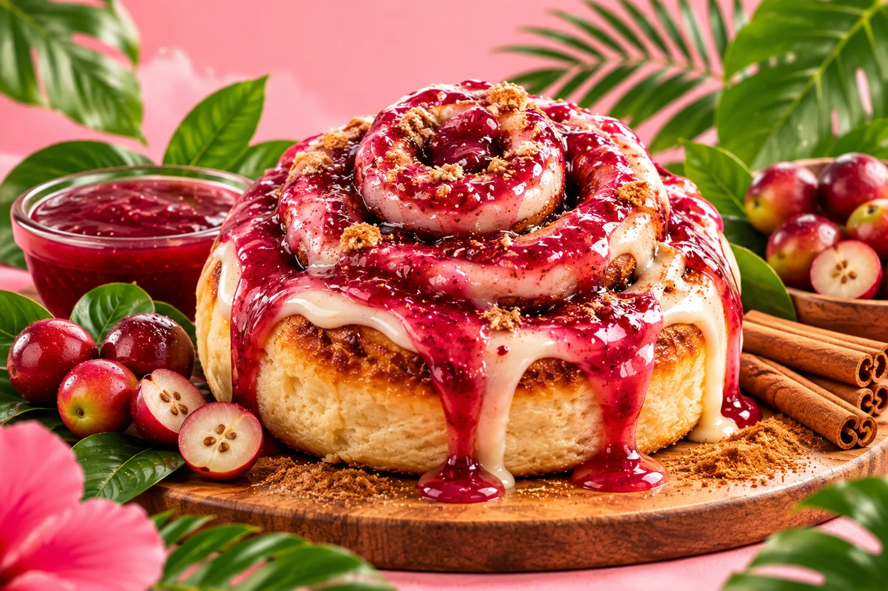
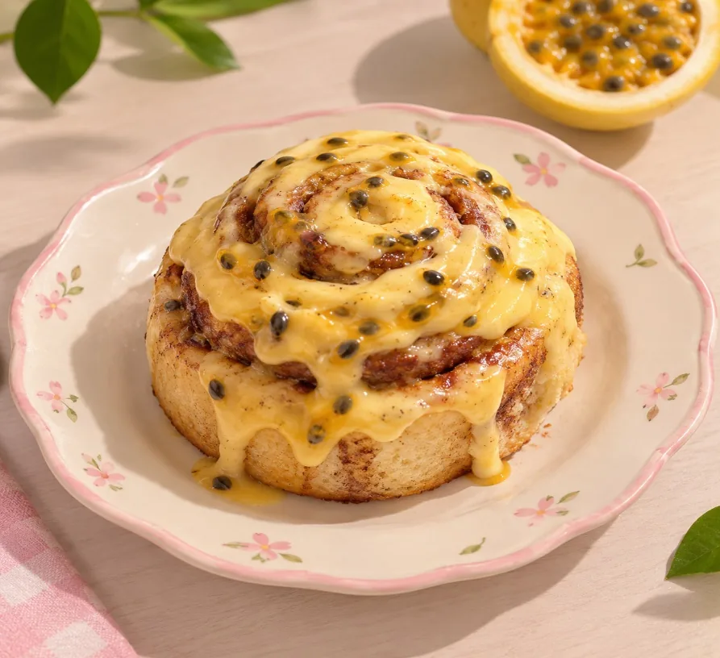

El producto que todos conocen
Un rollo de canela se entiende al instante. Eso hace fácil acercarse a la marca.
Inicio › Empresa
Quiénes somos
SAMKANELI elabora rollos de canela artesanales y los combina con sabores de frutas de la Selva Central, con una atención amable y cercana.


Es un emprendimiento de rollos de canela con sabores de la Selva Central. Toma un postre que todos reconocen y le da un carácter propio con frutas de la región.
Su personalidad busca ser dulce, amigable, acogedora, creativa, cercana y confiable. Su meta es crecer como una marca reconocida a nivel regional.
Definido en la ficha Datos tomados de la ficha de análisis de identidad institucional.

Origen del nombre
El nombre une a una persona con el ingrediente principal del producto.
De Samantha, según la ficha institucional.
Referencia a la canela, que la ficha presenta como palabra del idioma finlandés.

Propuesta de valor
Tres ideas que sostienen a la marca.
Un rollo de canela se entiende al instante. Eso hace fácil acercarse a la marca.
Frutas como maracuyá, mango, piña, camu camu y coco dan una identidad que otros postres no tienen.
Una comunicación amable y personalizada para que cada cliente se sienta bien recibido.
Esencia
Dulzura, calidez, naturaleza y cercanía.

Dulzura
Selva CentralDulces rollos, sabores de nuestra selva.
Endulzar sin complicarse: cuidar el producto, escuchar al cliente y hacer que la selva se note en cada sabor.
Endulzar a nuestros clientes con rollos de canela artesanales, combinando la canela con los sabores únicos de las frutas de nuestra selva (mango, piña, coco, chocolate, etc.) y brindando una atención amable y cercana.
Definido en la fichaPara el año 2030, lograremos que SAMKANELI se convierta en una marca reconocida a nivel regional, destacando por sus rollos de canela artesanales, sus sabores de la Selva Central y la calidad de sus productos.
Definido en la ficha Es una proyección hacia 2030, no un logro ya alcanzado.Este espacio está reservado para la historia real del emprendimiento.
La ficha no documenta cómo ni cuándo empezó, así que no se inventa. Cuando tengas los datos, edita el texto de este bloque.
[AGREGAR HISTORIA DEL EMPRENDIMIENTO]